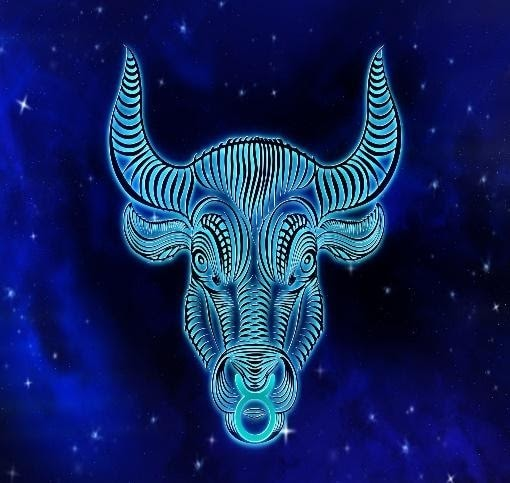

Urutan Zodiak dan Karakternya
1. Zodiak Aquarius
Orang yang lahir antara tanggal 20 Januari – 18 Februari merupakan bagian dari zodiak Aquarius. Aquarius adalah "pengisi air", melambangkan inovasi dan kepemimpinan.
Baca Selengkapnya...
2. Zodiak Pisces
Orang yang lahir antara tanggal 19 Februari – 20 Maret merupakan bagian dari zodiak Pisces. Pisces adalah dua "ikan" yang melambangkan empati dan spiritualitas.
Baca Selengkapnya...
3. Zodiak Aries
Zodiak Aries dimiliki oleh orang yang lahir pada tanggal 21 Maret – 19 April. Dikenal sebagai "domba jantan", Aries melambangkan keberanian dan semangat.
Baca Selengkapnya...
4. Zodiak Taurus

Zodiak Taurus dimiliki oleh orang yang lahir pada tanggal 20 April – 20 Mei. Taurus digambarkan sebagai seekor "banteng" yang melambangkan keteguhan dan kestabilan.
Baca Selengkapnya...
5. Zodiak Gemini

Orang yang lahir antara tanggal 21 Mei – 20 Juni merupakan bagian dari zodiak Gemini. Gemini mewakili "saudara kembar" yang melambangkan dualitas dan kecerdasan.
Baca Selengkapnya...
6. Zodiak Cancer
Zodiak Cancer dimiliki oleh orang yang lahir antara tanggal 21 Juni – 22 Juli. Cancer diwakili oleh "kepiting" yang melambangkan kepekaan dan perlindungan.
Baca Selengkapnya...
7. Zodiak Leo
Orang yang lahir antara tanggal 23 Juli – 22 Agustus merupakan bagian dari zodiak Leo. Leo adalah "singa", melambangkan keberanian dan kebanggaan.
Baca Selengkapnya...
8. Zodiak Virgo
Orang yang lahir antara tanggal 23 Agustus – 22 September merupakan bagian dari zodiak Virgo. Virgo digambarkan sebagai seorang "perempuan", melambangkan ketelitian dan analisis.
Baca Selengkapnya...
9. Zodiak Libra
Orang yang lahir antara tanggal 23 September – 22 Oktober merupakan bagian dari zodiak Libra. Libra mewakili "timbangan", melambangkan keadilan dan keseimbangan.
Baca Selengkapnya...
10. Zodiak Scorpio
Zodiak Scorpio dimiliki oleh orang yang lahir antara tanggal 23 Oktober – 21 November. Scorpio adalah "kalajengking", melambangkan intensitas dan transformasi.
Baca Selengkapnya...
11. Zodiak Sagittarius
Zodiak Sagittarius dimiliki oleh orang yang lahir antara tanggal 22 November – 21 Desember. Sagittarius digambarkan sebagai "pemanah", melambangkan petualangan dan optimisme.
Baca Selengkapnya...
12. Zodiak Capricorn

Zodiak Capricorn dimiliki oleh orang yang lahir antara tanggal 22 Desember – 19 Januari. Capricorn diwakili oleh "kambing tanduk", melambangkan ambisi dan ketekunan.
Baca Selengkapnya...